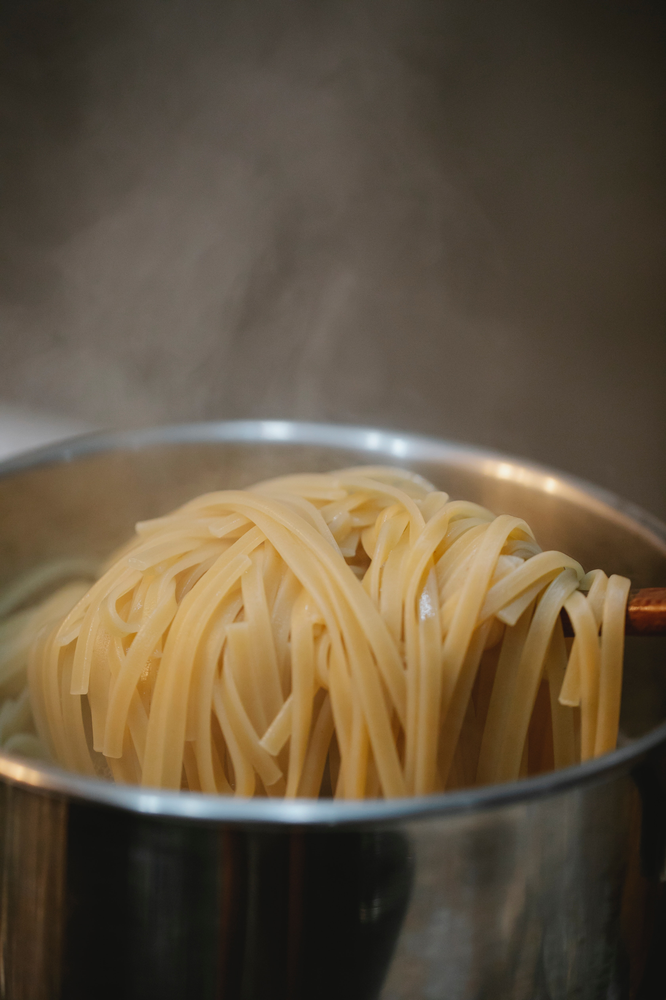
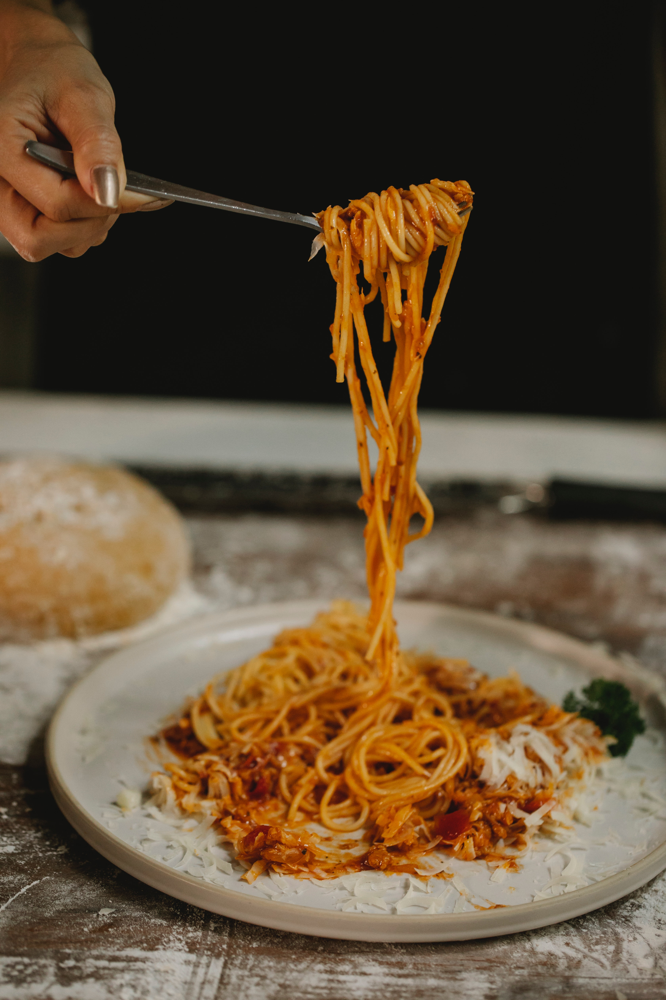

The Perfect Pasta Tips
The Do's and Dont's to the perfect pasta.

Don't Spice It Up

Do It Al Dente

There’s so many different types of pasta to make a toothsome delight. From macaroni, farfalle, fusili, to spaghetti, fettuccine, ravioli,
there’s a noodle for every pasta lover to enjoy.
You can create any pasta dish the way you want it but for Waridi, pasta is made in tree categories: simple, spicy and yes, sophisticated. Your pasta does not have to be as boring as life can get sometimes.
Starting from the sauce to the ingredients, all simple pasta dishes are designed to be eaten even by weaning babies. For those who love simplicity, you will enjoy these pasta recipes. Pasta is more than the spices and add-ons. It is what makes you smile in each bite.
Do you feel adventurous and want to try something that excites your toungue? Ranging from the tart taste of vinegar, creamy mayo, a chilled ranch dressing infused with pomegranate seeds and tens of other witty combinations to try, this category is perfect for you.
Need I say more? Cheese makes pasta sophisticated and for those who can handle the outburst of flavor then, let us go loco with cheese! Here, we do not leave anything on our plates so, be prepared.
The Do's and Dont's to the perfect pasta.
My two favourite dishes, motivated by the people I love the most
Papa's introduction to spaghetti for me. I love it!
Full of tricks and twists in this dish she showed me, mama, you are the best.